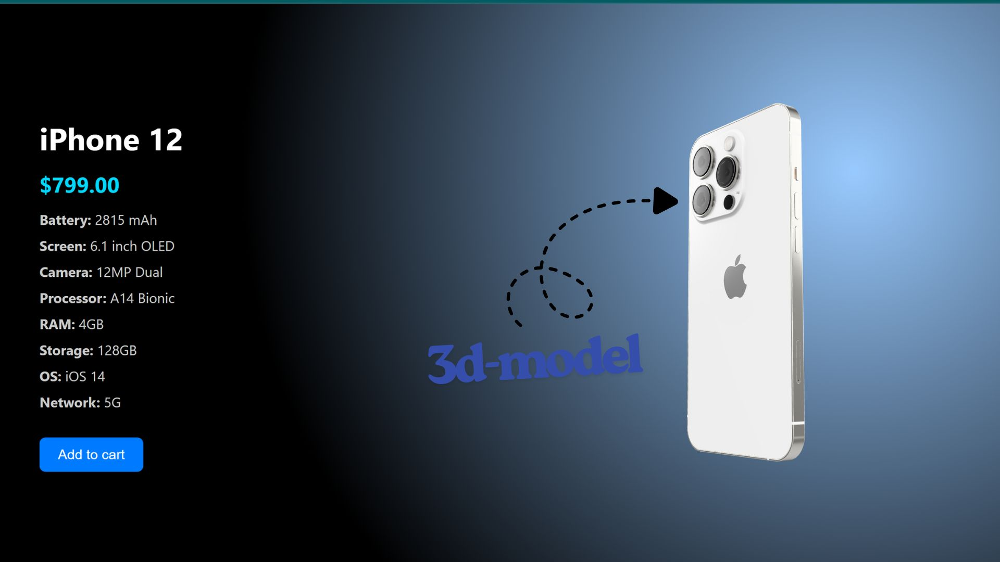
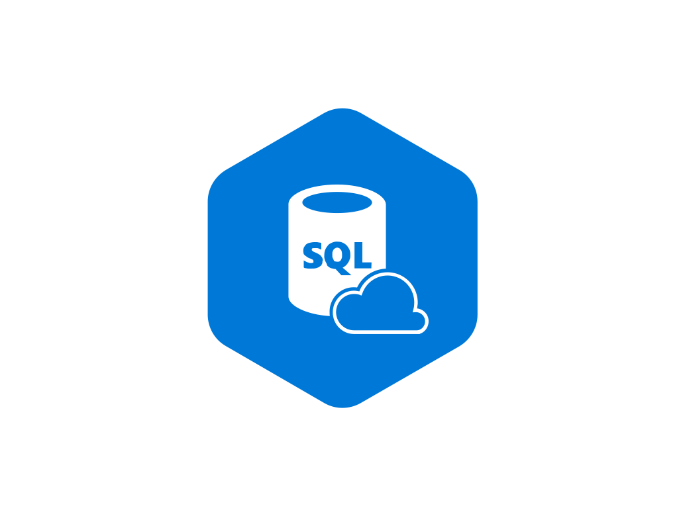
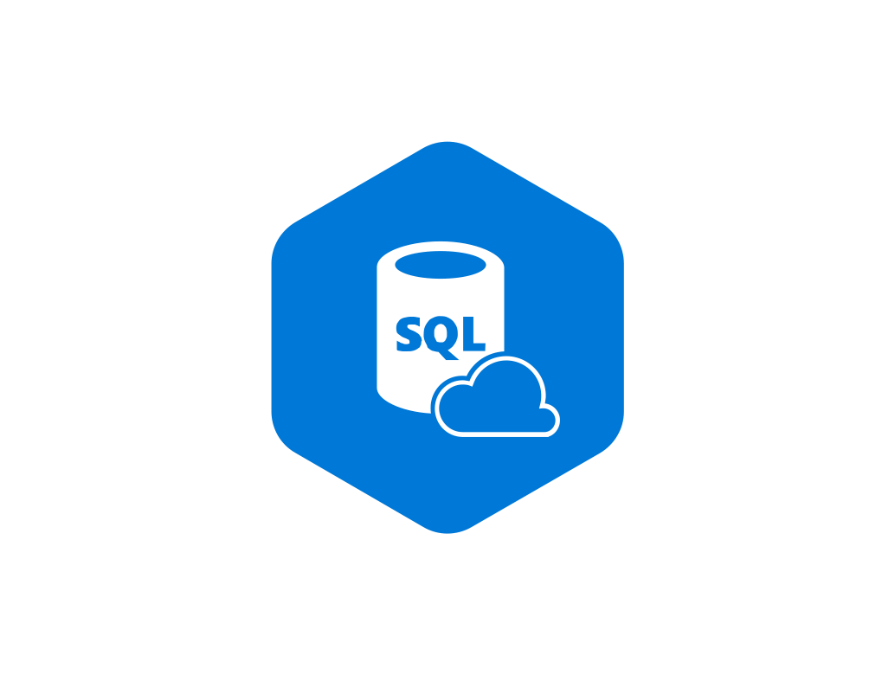

I’m a Computer Science student driven by curiosity and creativity.
I enjoy working with data analysis tools to uncover insights and with front-end development to bring ideas to life on the web. For me, coding is not just about solving problems it’s about turning logic into impact and design into experiences people enjoy.
When I first stepped into the world of Computer Science, I wasn’t just curious about how computers worked I was fascinated by how data and code could shape ideas into reality.
As a CS student, I’ve been building my foundation while exploring two areas I’m most passionate about: Data Analysis and Web Development.
On one side, I enjoy diving into data using tools like Excel, SQL, and Python libraries to clean, analyze, and uncover insights that numbers alone can’t tell.
On the other side, I find creativity in the web especially in front-end development, where I can transform concepts into interactive and user-friendly experiences.
For me, it’s not just about writing code; it’s about solving problems, telling stories with data, and designing interfaces that people enjoy using. This mix of logic and creativity is what keeps me excited to learn, experiment, and grow in the tech world.
MyExperiences
DEPI Data Analyst Specialist
2025 - Present
Digital Egypt Pioneers Initiative (DEPI) – Data Analysis Specialist (Google Track)
Specializing in Data Analysis through Google’s track, gaining hands-on experience with SQL, Excel, Python, and Power BI. Working on real projects to apply data cleaning, visualization, and insight generation to business challenges.
introduction to Data Science
issued Dec 2024
Completed Cisco’s Introduction to Data Science course, covering the fundamentals of data collection, cleaning, analysis, and visualization. Learned how to apply essential tools and concepts to extract insights and support data-driven decision making.
CS50’s Introduction to Computer Science – Harvard University
issued 2024
Completed Harvard’s CS50, a rigorous introduction to computer science covering algorithms, data structures, C programming, Python, SQL, and web development. Strengthened problem-solving skills through hands-on projects and programming assignments.
previousCompleted Projects

MoboGo online store
using (HTML, CSS, JavaScript,PHP, MySQL)
Developed a dynamic web application that helps users explore and compare mobile phones by brand and category.
Built with HTML, CSS, JavaScript (front-end) and later enhanced using PHP and MySQL (back-end) to enable database-driven content management.
The project demonstrates skills in web design, database integration, and user experience development.
In this project, I transformed raw messy data into a clear business story.
I started by cleaning and preparing the data fixing missing values, removing duplicates, and standardizing fields. Then, I merged different sources and created calculated measures to add more meaning. Through exploratory analysis, I uncovered trends and patterns that shaped the insights. Finally, I built an interactive Power BI dashboard with KPIs, filters, and visuals to make the story easy to explore and act upon.
In this project, I applied the full data analysis process using Excel, starting from raw data to delivering an insightful dashboard.
Data Cleaning & Preparation: Removed duplicates, fixed missing values, standardized column names, and ensured overall data accuracy.
Data Dictionary: Built a clear data dictionary to define each field, making the dataset easy to understand and maintain.
Data Transformation: Applied formulas, pivot tables, and calculated fields to uncover hidden insights.
Exploratory Analysis: Detected trends, anomalies, and key patterns that support decision-making.
Dashboard Creation: Designed an interactive Excel dashboard with charts, KPIs, and slicers for a user-friendly experience.
Through this workflow, I transformed messy data into a structured and meaningful story, fully powered by Excel.
I've put together a chatbot here which knows all my skills, work
experience, projects and has a copy of my CV. You can use it to ask
questions about me to get a better idea of who I am and what I've done.
You can also download my CV here if you want to take a look at it. I'm
currently looking for new opportunities so if you have a project you
think I'd be a good fit for, please get in touch!


 
